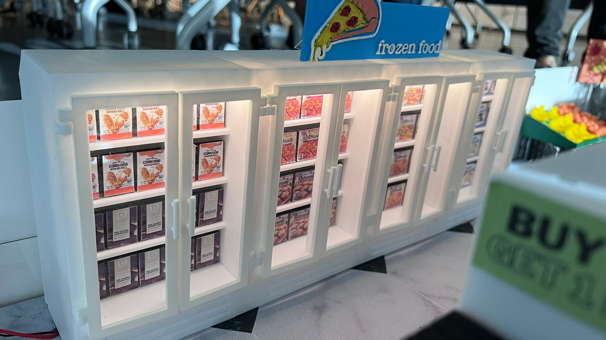
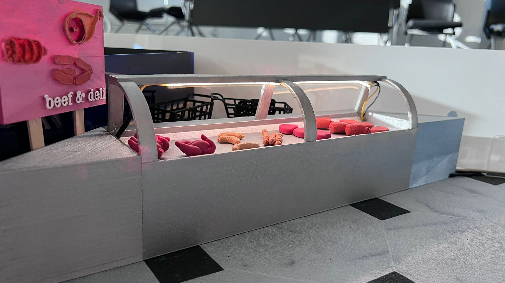
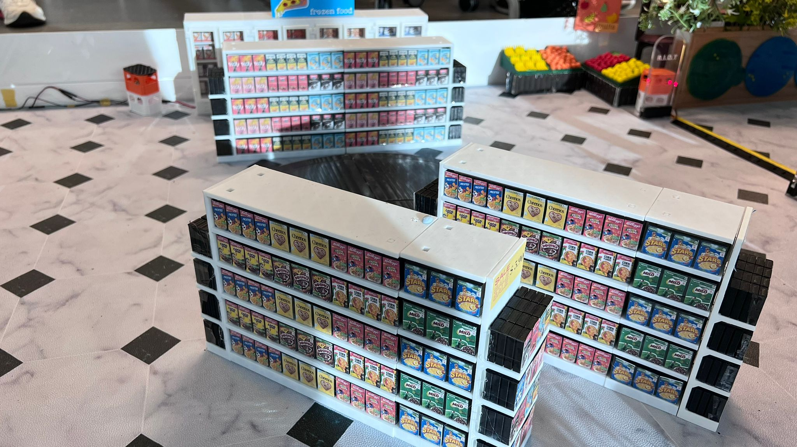
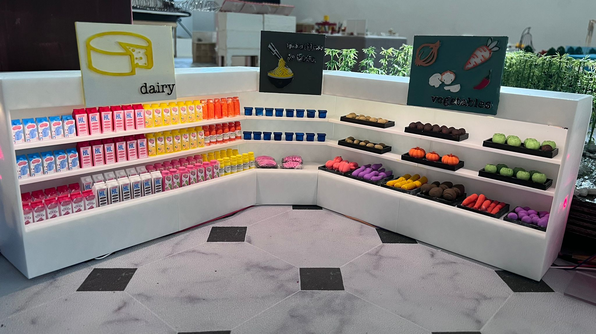
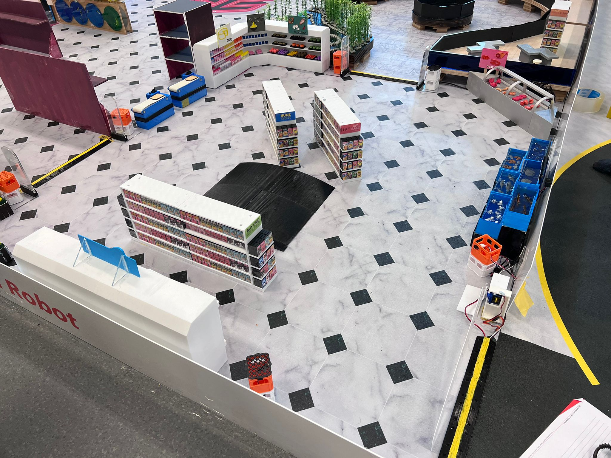

Arena design
    As the theme of the arena section was a supermarket, my team and I went to the supermarket multiple times and selected the traits we wanted to showcase in our arena design. The artifacts were mostly fabricated using 3D printing while the packaging was done using sticker paper.
ROS navigation
Before testing on the actual hardware, we ran simulations in gazebo and rviz (ROS visualisation) to test the feasibility of the hardware robot navigating in our fabricated arena.
Using the ROS1 middleware framework, we utilized rviz to navigate the hardware limo robot to different points around the arena. The robot that takes the shortest time to travel through every section of the arena wins the competition.
Line tracing
The line tracing code was done using python, the robot that reaches the finishing point with the shortest time wins the competition.